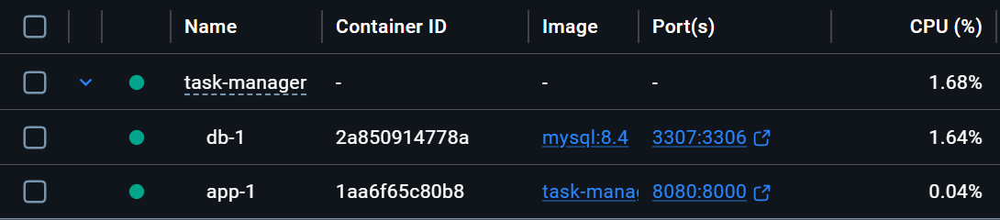
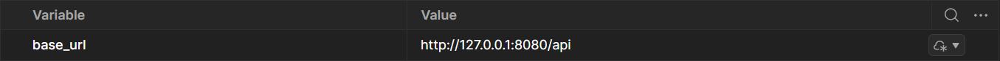
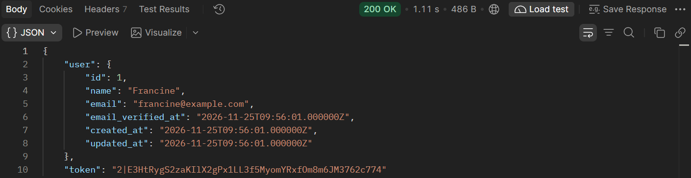
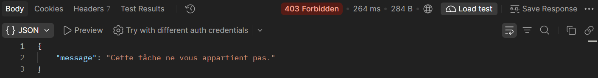
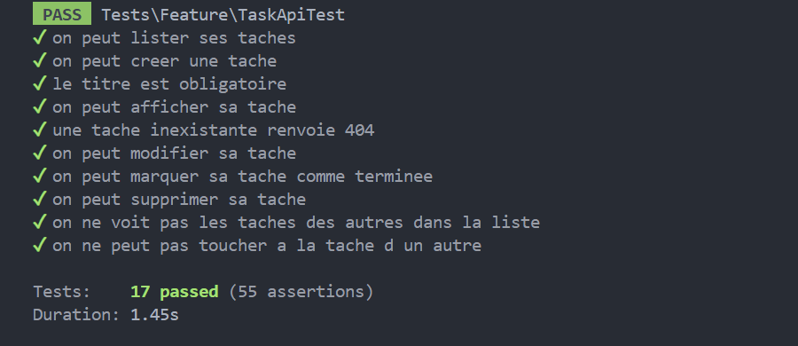

Démonstration #03 · De la théorie à la pratique
Mon API démarre en une commande, sur n'importe quel PC
Fini « ça marche chez moi ». Avec Docker, l'API et sa base MySQL se lancent ensemble, sans rien installer d'autre.
DockerDocker ComposeDockerfile
MySQL 8.4Laravel 13Volumes
# Avant : installer PHP, Composer, XAMPP, configurer…
# Maintenant :
$ docker compose up -d --build
✔ Container task-manager-db-1 Healthy
✔ Container task-manager-app-1 Started
Le problème
« Pourtant, ça marche sur ma machine ! »
Pour lancer mon API, quelqu'un devait installer exactement les mêmes outils que moi, dans les bonnes versions.
✗ Sans Docker
- • Installer PHP 8.4
- • Installer Composer
- • Installer XAMPP pour MySQL
- • Activer les bonnes extensions
- • Créer la base à la main
- • Configurer le fichier .env
✓ Avec Docker
- • Installer Docker Desktop
- • Taper une commande
- C'est tout.
Docker emballe l'application avec tout ce dont elle a besoin : le même résultat sur mon PC, celui d'un collègue ou un serveur.
Les bases
5 mots pour comprendre Docker
Une image pour retenir : faire des gâteaux. 🎂
| Image | 🍰 | Le moule : le système, PHP, le code. Figée, réutilisable. |
| Conteneur | 🎂 | Le gâteau sorti du moule : l'application qui tourne vraiment. |
| Dockerfile | 📜 | La recette pour fabriquer l'image, étape par étape. |
| Compose | 🎼 | Le chef d'orchestre : lance l'API et MySQL ensemble. |
| Volume | 🗄️ | Le placard où MySQL range ses données, même conteneur éteint. |
Un conteneur n'est pas un ordinateur virtuel complet : il partage le système de la machine. C'est pour ça qu'il démarre en quelques secondes.
Étape 1 · La recette
Le Dockerfile
Dockerfile (version simplifiée)# 1. Partir d'une image officielle avec PHP 8.4
FROM php:8.4-cli
# 2. Ajouter l'extension pour parler à MySQL
RUN docker-php-ext-install pdo_mysql
# 3. Récupérer Composer
COPY --from=composer:2 /usr/bin/composer /usr/bin/
# 4. Installer les dépendances, PUIS copier le code
WORKDIR /app
COPY composer.json composer.lock ./
RUN composer install
COPY . .
# 5. Au démarrage : tables + serveur
ENTRYPOINT ["sh", "docker/entrypoint.sh"]
Pourquoi les dépendances avant le code ? Docker garde chaque étape en cache. Si je modifie mon code, il ne réinstalle pas tout : le build passe de minutes à secondes.
Étape 2 · Le chef d'orchestre
docker-compose.yml
docker-compose.ymlservices:
app: # mon API
build: . # avec mon Dockerfile
ports: ["8080:8000"]
depends_on:
db: { condition: service_healthy }
db: # la base
image: mysql:8.4 # image officielle
ports: ["3307:3306"]
volumes: [db-data:/var/lib/mysql]
healthcheck: … # « MySQL est prêt ? »
depends_on + healthy : l'API attend que MySQL soit réellement prêt avant de démarrer.
"8080:8000" se lit : le port 8080 de mon PC mène au port 8000 du conteneur.
Vue d'ensemble
Qui parle à qui ?
Postman
:8080
→
🐳 Docker
Conteneur « app »
PHP 8.4 + Laravel · port 8000
↓ DB_HOST=db
Conteneur « db »
MySQL 8.4 · port 3306
↓
Volume « db-data »
les données survivent aux arrêts
Entre conteneurs, on s'appelle par son nom : l'API cherche MySQL à l'adresse db, pas 127.0.0.1.
J'ai choisi 8080 et 3307 pour ne pas gêner XAMPP (3306) : les deux tournent en même temps.
Le résultat
✓ Les 2 conteneurs tournent
Docker Desktop

db-1 : l'image officielle mysql:8.4, sur le port 3307.
app-1 : mon API, construite avec mon Dockerfile, sur le port 8080.
Dans Postman, je change juste l'adresse

Le code de l'API n'a pas changé d'une ligne. Seul l'endroit où elle tourne a changé.
Tester avec Postman
Même API, mêmes réponses
Connexion → 200 et un jeton

La tâche d'Alex → 403

La sécurité de la démo #02 fonctionne à l'identique, cette fois servie par Docker et son propre MySQL.
Ce que j'ai appris
2 pièges que les tests n'ont pas vus
🐛 MySQL avait l'air prêt… trop tôt
Au 1er démarrage, MySQL lance un serveur temporaire puis redémarre. Le test de santé passait déjà, l'API se connectait pendant le redémarrage : Connection refused. Solution : tester via le réseau (127.0.0.1).
🐛 L'API utilisait SQLite au lieu de MySQL
« php artisan serve » efface les variables d'environnement avant de lancer son serveur. Les tables allaient dans MySQL, l'API cherchait SQLite. Solution : un fichier .env dédié à Docker.
Et les tests, lancés dans le conteneur

À retenir
3 leçons de cette démo
1
Une image = une recette reproductible
Même environnement partout : plus de « ça marche chez moi ».
2
« Démarré » ne veut pas dire « prêt »
Un healthcheck bien écrit évite les erreurs au démarrage.
3
Toujours tester en conditions réelles
Pour la 2ᵉ démo d'affilée, un vrai essai a révélé des bugs invisibles aux tests.
🔗 Le code complet est sur GitHub (lien en commentaire)
💬 Démo #04 : mettre l'API en ligne, ou ajouter filtres et pagination ? Vote en commentaire !
♻️ Partage si ça peut aider quelqu'un qui apprend